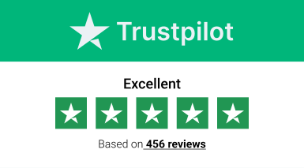

Six horizontal trust strips for above the stats tile — split on the recognition / social-proof axis.
The reference card-stack mixed two different proofs: an
award seal (institutional recognition) on top of
Google 4.8 ★ and Trustpilot 3.9
(consumer-rating aggregator widgets). They speak to different audiences
and live in different visual registers, so this round splits the file in
two and gives three drafts per axis. Pick one from each — or stack one
above the other — without the two having to share a frame.
Axis A · International recognition
"As seen in" — press, awards, accreditations
Editorial register. Names that close the deal on their own — FT,
Economist, Bloomberg, Corporate Immigration Awards, IMC, CFA. No
star ratings; no review counts. Reads like a magazine masthead, not
a rating widget.
Axis B · Social proof
"What clients said" — Google, Trustpilot, Clutch
Aggregator register. The signal is "many strangers said good things"
— quantitative, third-party, verifiable on the source. Two reskins
plus a doc-control treatment so the widget doesn't fight the
dossier voice.
Placeholder content. Press names (FT, Economist,
Bloomberg, Robb Report, IMI Connect), accreditation bodies (IMC, CFA,
IBA, FATF) and all rating numbers (Google 4.8 / 312 reviews; Trustpilot
3.9 / 47; Clutch 5.0 / 18; Corporate Immigration Awards 2019) are
stand-ins for the visual register. Swap for verified Mobius
affiliations and real source counts before any of these ships.
Axis A · recognition
Axis B · social proof
Axis A · § I–III
International recognition — press, awards, accreditations.
Strips that say "respected institutions have named us." No star ratings
or review counts — the names themselves do the work. Best as a single
line above either the hero or the stats tile.
"As seen in" — a single hairline-ruled press strip.
Most restrained of the recognition trio. Two hairlines, a small-caps
"AS SEEN IN" tag, five wordmarks in muted serif at 18 px. No cards, no
borders, no badges — the strip behaves like the standfirst on a print
feature. Reader's eye skims left → right across the wordmarks, then
drops naturally into 14 / 100 / 32.
No card frame. Two ink hairlines top + bottom; wordmarks at 18 px in their own serif/sans register so each reads as itself rather than as a generic logo block.
Mobile
Label wraps to its own row, logos flow-wrap left-aligned, gap drops 36 → 22 px. Five wordmarks fit 320 px in two rows.
vs the reference image: the reference uses three rounded rating widgets — vertical and self-contained. This has no numbers of its own; it's a masthead, not a scorecard. Doesn't compete with the 14 / 100 / 32 numerals below.
Each disc is a circular wax-seal-style emblem — top arc of small-caps
institution name, italic monogram in the centre, year on the bottom.
Reuses the wax-seal direction already explored in
freshness-badge-redesign.html round two.
Recognition tier: top award + top professional council + top
qualification + top legal affiliate + top regulatory alignment.
Pencil sketch
Live mock — seals + stats tile
Award · WinnerCIACorp. Immigration2019
MemberIMCInvestment Migrationsince 2018
CharterholderCFACFA Institute2011
AffiliateIBAInt'l Bar Assoc.since 2020
KYC · AMLFATFAlignedrecommendations
14+
Years in capital markets
CFA-trained, NYSE-seasoned advisory
100+
Mandates delivered
Across CBI, RBI and tax residency
32
Jurisdictions covered
From the Caribbean to the Gulf
Surface
Coin disc on cream ground: gold-deep outer hairline + soft radial bloom + nested inner hairline. Italic Cormorant monogram at 24 px. Each disc max 160 px so 5 fit at 1120 px and 3 fit at 360 px.
Mobile
Collapses to a 3-column grid with smaller (8 px) seal type. No horizontal scroll — discs shrink with the column.
vs the reference image: trades the consumer-rating language (4.8 ★) for institutional language (member, charterholder, affiliate). Same "I have evidence" emotional payload, different audience.
Most editorial of the recognition trio. No logos, no badges — one
italic press quote in Newsreader, oversized opening quote mark in
gold, attribution in small-caps Manrope, and a tight meta-column on
the right with two factual anchors (CIA award + IMC member-since).
One sentence does the trust work; the meta column proves it.
Pencil sketch
Live mock — quote ribbon + stats tile
"
The kind of firm that takes the file you can't bring
yourself to send anywhere else — and reads it before
the engagement letter is signed.
— Industry trade press · 2024
AwardCIA · 2019Member sinceIMC · 2018
14+
Years in capital markets
CFA-trained, NYSE-seasoned advisory
100+
Mandates delivered
Across CBI, RBI and tax residency
32
Jurisdictions covered
From the Caribbean to the Gulf
Surface
Two gold hairlines (1 px each) with a 6 % gold radial bloom at top + bottom. Newsreader italic 300 at 22 px; bold emphasis lifts the single line that should be remembered. Hairline-divided meta column anchors the quote with two facts.
Mobile
Three columns collapse to a single column; meta column drops below the quote with a top hairline. Quote mark shrinks 96 → 60 px.
vs the reference image: goes the opposite direction — one trust sentence instead of three trust widgets. Highest editorial register, lowest visual mass; the only one of the recognition trio that requires a real press quote to ship.
Axis B · § I–III
Social proof — Google, Trustpilot, Clutch & the award seal.
Strips that say "many strangers said good things, and the score is
verifiable on the source site." Three treatments of the same three
datapoints — reference-faithful, editorial-reskinned, audit-register —
so you can pick the one that least dents the dossier voice.
Closest possible mirror of the screenshot. The Google and Trustpilot
widgets are the real brand SVGs from
/public/google.svg and
/public/trustpilot.svg — full pre-rendered
rating cards with drop shadow, top accent and native typography baked
in. The Corporate Immigration Awards card is built in HTML to match
their visual register (white card, soft drop shadow, red top stripe,
red double-ring winner seal). Highest source-recognition value of
the social-proof trio; loudest visually.
Pencil sketch
Live mock — native-brand cards + stats tile
Corporate Immigration Awards
WINNER
2019
Corporate Immigration & Relocation Awards
Category winner · 2019

14+
Years in capital markets
CFA-trained, NYSE-seasoned advisory
100+
Mandates delivered
Across CBI, RBI and tax residency
32
Jurisdictions covered
From the Caribbean to the Gulf
Surface
Three cards in a 3-column grid. Two are real brand SVGs (/public/google.svg — white card, green top stripe, 4-colour Google G, 4.8★ baked in; /public/trustpilot.svg — green header band, light-blue body, four green Trustpilot stars, rated 3.9 baked in). The third is built in HTML with matching ingredients: white card, 8 px red top stripe, soft drop shadow, red double-ring winner seal.
Mobile
Grid collapses to single column. SVGs scale by width so their native aspect ratios are preserved; the CIA card flexes to match.
vs the reference image: 1:1 mirror, only turned horizontal — Awards / Google / Trustpilot in their native registers, gold/green top rules retained. Honesty tax: cards must link out (target="_blank") to the live source where the rating is verifiable, otherwise the widget reads dishonest. Asset paths: the sketch uses relative paths (../../public/google.svg) so it works whether the file is opened via file://, npx serve . or any other static host. When ported into the React app, Vite strips public/ at build, so the production paths become /google.svg and /trustpilot.svg.
Same three sources, reskinned into the dossier voice.
Same three datapoints as B.I — Awards / Google / Trustpilot — but
every colour, font and ornament is overwritten. Cream cards with 2 px
gold top-rules; italic Cormorant numerals at 44 px (matches the
stats-tile family below); a single gold-dot source tag in small-caps
Manrope at the top; review count in editorial italics at the foot.
Loses recognition value of the native brands, gains visual coherence
with the rest of the page.
Pencil sketch
Live mock — reskinned cards + stats tile
Awards · Winner
Corporate Immigration & Relocation Awards
2019 · category winner
CIA · 2019
Google reviews
4.8/ 5.0
★ ★ ★ ★ ★
312 reviews · maps.google.com
Trustpilot
3.9/ 5.0
★ ★ ★ ★ ★
47 reviews · trustpilot.com
14+
Years in capital markets
CFA-trained, NYSE-seasoned advisory
100+
Mandates delivered
Across CBI, RBI and tax residency
32
Jurisdictions covered
From the Caribbean to the Gulf
Surface
Cream cards (matches the stats tile beneath), 2 px gold top-rule (mirrors the yellow accent on Google's card in the reference). Italic Cormorant 44 px rating numerals echo the 80 px stats numerals — strip + tile become one editorial family. Stars in brand gold, off-stars at 18 % ink.
Mobile
Stacks to single column. Source dot + small-caps tag stays inline, the 44 px rating drops to 36 px to keep card height under 132 px.
vs the reference / vs B.I: the data is identical to B.I; the visual mass is half. Reads as part of the dossier rather than as a foreign widget stuck on top. Trade-off: a reader scanning fast may not immediately register "this is Google's number" — the source word is small-caps, not the multicolour glyph.
One monospace audit row — three sources, three numbers.
Lowest-key social-proof option. Reuses the
.ht-breadcrumb__doc-control register from
Breadcrumb.jsx verbatim — three tabular
cells, each carrying a monospace source key + green-dot CURRENT
indicator, italic Cormorant rating numeral, monospace
"n reviews" sub-line. Same dossier-audit DNA the rest of the
program pages already speak; no cards, no stars by default.
Pencil sketch
Live mock — doc-control aggregator + stats tile
Google · maps
4.8/ 5.0
312 reviews · since 2019
Trustpilot
3.9/ 5.0
47 reviews · since 2020
Clutch · B2B
5.0/ 5.0
18 reviews · since 2022
14+
Years in capital markets
CFA-trained, NYSE-seasoned advisory
100+
Mandates delivered
Across CBI, RBI and tax residency
32
Jurisdictions covered
From the Caribbean to the Gulf
Surface
Monospace JetBrains Mono throughout (matches the program-page doc-control). Faint 2 % tint ground; ink hairlines top + bottom; vertical hairline column rules. Italic Cormorant 36 px numerals are the one editorial flourish so the eye still has a hero per cell.
Mobile
Three cells collapse to a single column, vertical rules become horizontal hairlines between rows. Number sizes preserved.
vs the reference / vs B.I & B.II: drops every brand cue (no Google G, no Trustpilot green, no rounded card). Reads like an audit filing's third-party verification row — the rating is data, not advertising. Best fit for the editorial voice; lowest source-recognition for fast readers. Honest disclosure: source-link each cell so the reader can verify on Google / Trustpilot / Clutch.